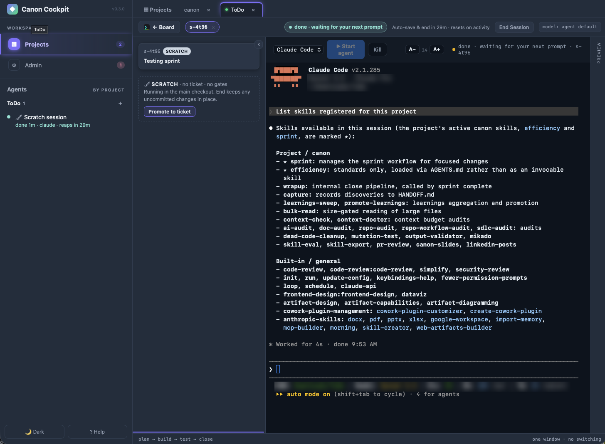
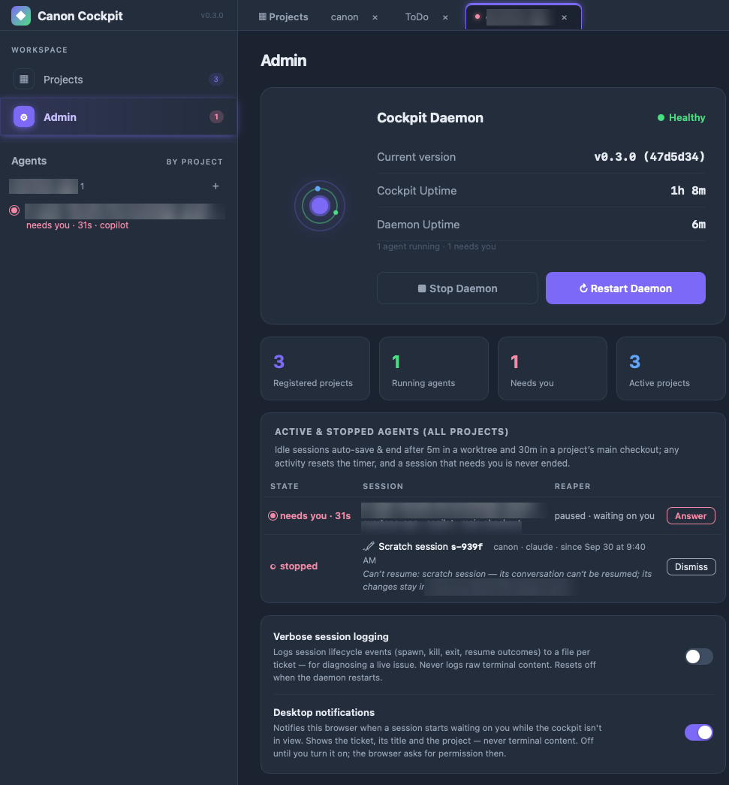
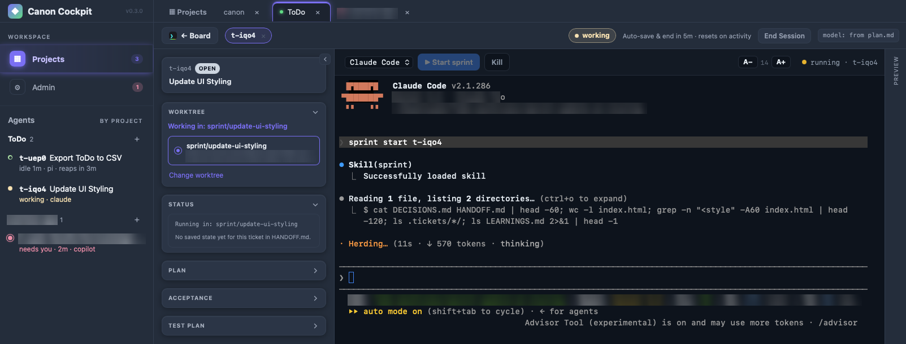
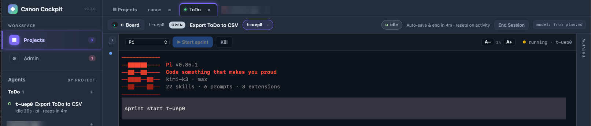
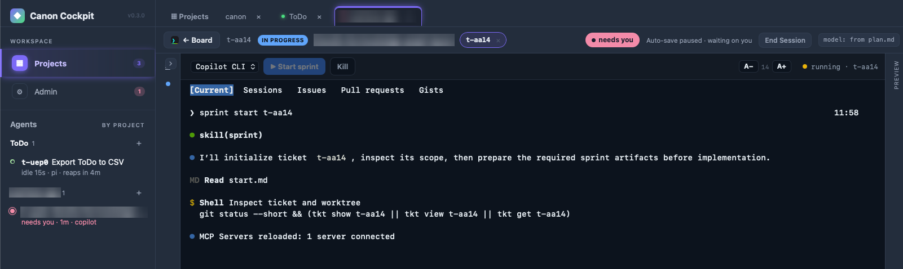
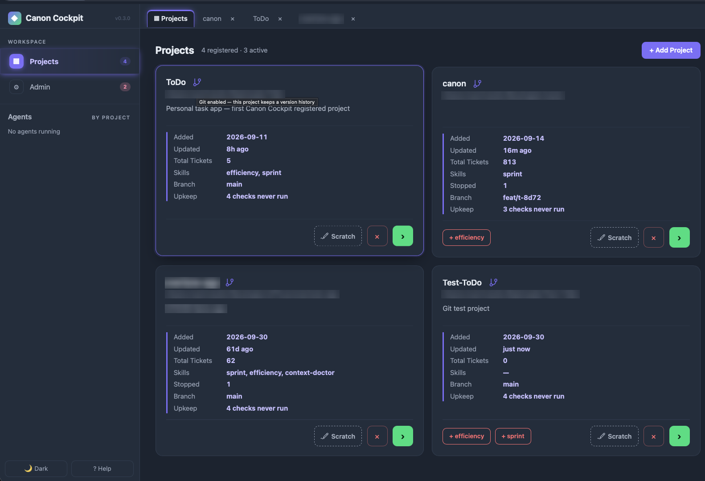
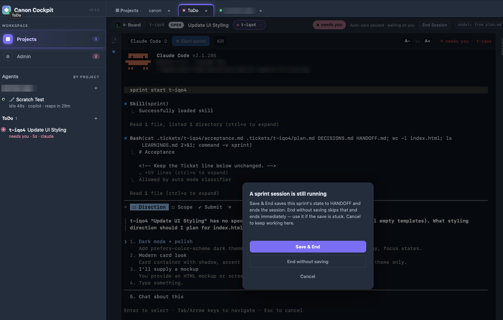
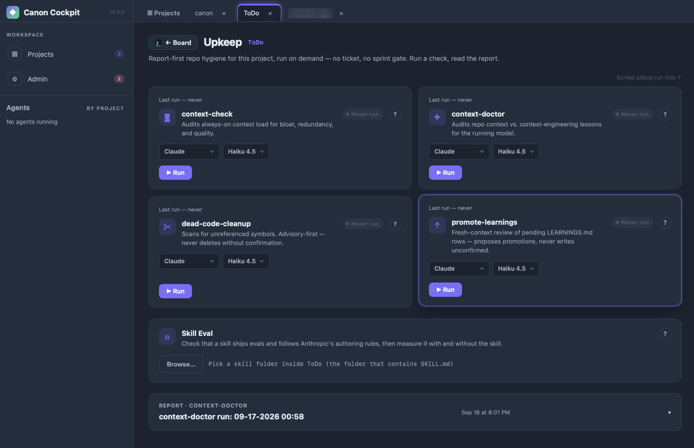
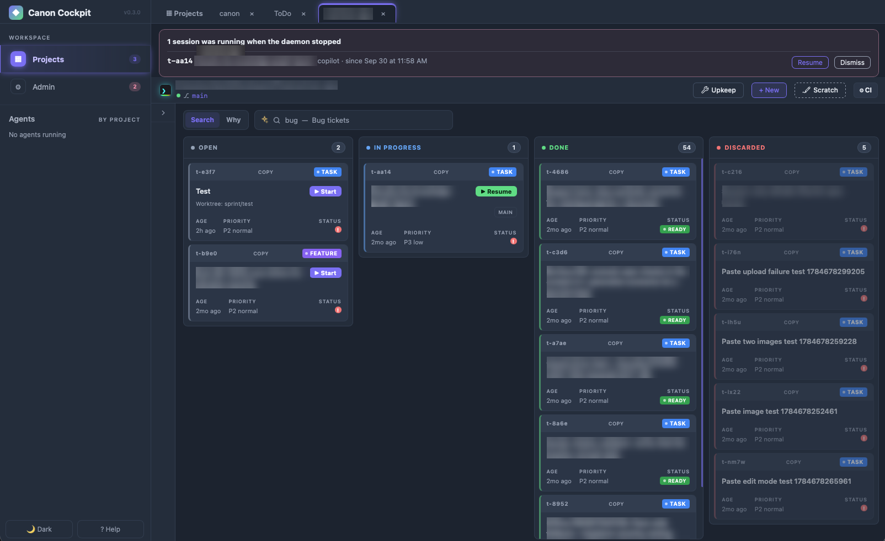
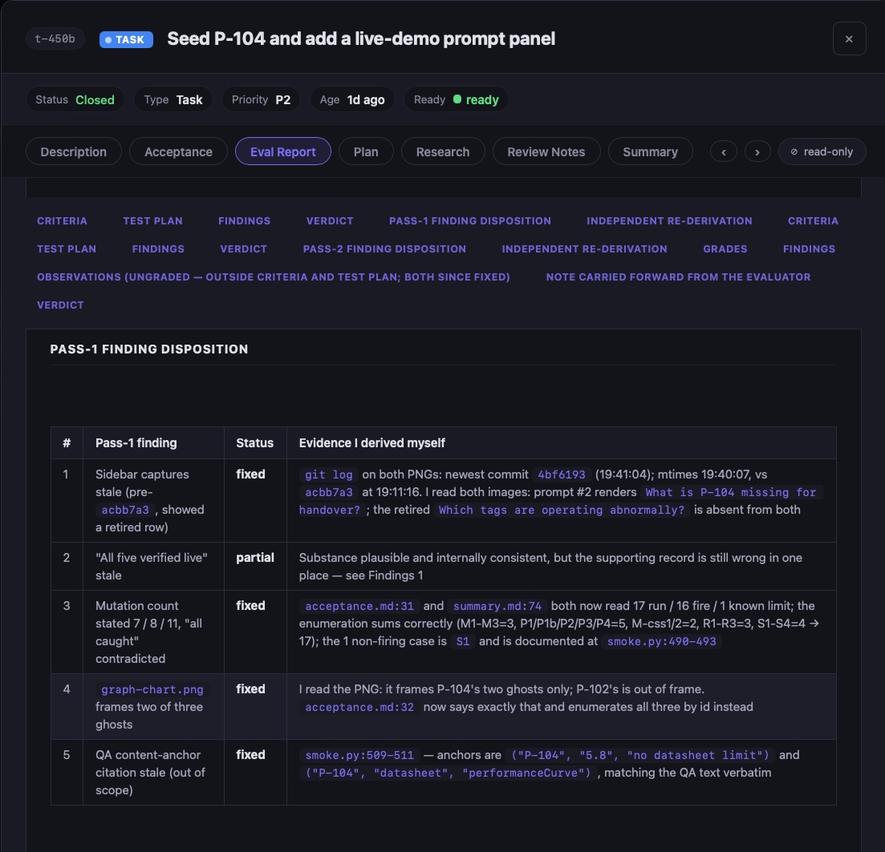

Continue a scratch session as a ticket and the same conversation resumes. Close gates run as fresh subagents with Read, Grep, Glob and Bash.
The agent workflow harness
Your agent forgets. Your repo shouldn't.
Run canon to open the Cockpit: add your projects, run agents, watch every session, keep each repo tidy. Plans, decisions and acceptance criteria stay in your repo as plain markdown, and a second agent with no memory of the build grades the work before a sprint can close.
$curl -fsSL https://raw.githubusercontent.com/sunitghub/canon-skills/main/install.sh | bash
Works with Claude Code · Pi · Copilot CLI
NEW Scratch sessions, promoted to tickets
771Tickets done in canon's own repo, Sep 30
21Skills in the repo
3Agent CLIs in the cockpit
0Accounts or hosted services
A live session, inside the Cockpit
Agent · scratch session · promote to ticket

The daemon
A small daemon owns your terminals.
Agents run under a local daemon, not inside the browser tab. Refresh or close the tab and they keep working. Restart the daemon and each interrupted session can be resumed.
- Survives a refresh. Reload the tab and your agents keep working. One daemon serves every project.
- Restarts are recoverable. If the daemon stops, a banner lists each interrupted session with Resume and Dismiss. Resume reopens that ticket, ready to pick up where it left off.
- Idle sessions tidy themselves. They auto-save and end after 5 minutes in a worktree or 30 in a main checkout. Any activity resets the timer, and a session that needs you is never ended.
- Health on one page. Admin shows version, uptime and every active session, with Stop and Restart. Desktop notifications say when an agent is waiting.
- Loopback only. The daemon is gated by a session token and never exposes agent control off your machine.
# the same Cockpit, from any terminal
canon # open the Cockpit
canon status # board, daemon, sessions by state
canon sessions --json # every live agent, all projects
canon wait t-8716 --until needs-you
canon update # refresh canon + every project

Your agents
Claude Code, Pi and Copilot CLI. Side by side in one project.
Start as many sessions in a project as you need, each with its own agent. Claude Code can take one ticket while Pi takes another, each in its own worktree, all tracked on one board.
ToDo
t-iqo4 Update UI Styling working · claude
t-uep0 Export ToDo to CSV idle · pi



A promoted session keeps its directory and starts a fresh conversation. Close gates run on the Pi session's model.
A promoted session keeps its directory and starts a fresh conversation. Close gates use a read-only shell.
Codex reads the same skills. Its gate-agent definitions ship in the repo but have not been verified live.
The daily loop
Open canon. Three commands. Everything lands in the repo.
Commands
terminal · your-project
in your repo
What makes canon different
The agent that wrote the code is the worst reviewer of it.
Most harnesses ask the same agent to check its own work. Canon makes that structurally impossible.
A second agent, with no memory of building it.
A fresh subagent with Read and Bash only grades every acceptance criterion against the actual code, with a file:line cite per verdict. It has no idea why any choice was made, so it cannot inherit the assumption that produced the bug.
fail blocks the close
The CLI refuses, not the prompt.
No close with an unchecked box, a missing summary.md, or an eval verdict that isn't pass:. Any partial or not-run forces fail:.
A plan-vs-actual table with nowhere to hide.
One row per criterion: delivered, waived, deferred or partial. Deviations show up in the table or the sprint doesn't close.
Plans outlive the context window.
Rejected alternatives, constraints and the acceptance bar live in .tickets/. A compaction, a new session or you in six months all read the same thread.
Simple work stays light. Gates stay mandatory.
Close gates run on the model you set once in Admin > Model Tiers, overridable per ticket with Gate model:. A human chose it, never the agent judging its own work.
Learnings
Lessons that earn their place.
Claude's memory stores what the agent remembers. Canon stores what a fresh reviewer proved, then lets a second fresh agent and you decide what becomes a rule.
At closeCaptured
The reviewer's findings become a candidate on the ticket and one row in LEARNINGS.md. Automatic.
LaterJudged
promote-learnings runs in a fresh, read-only session and proposes one home for each durable lesson. The sprint never promotes itself.
Your callPromoted
You confirm. The rule lands in standards/ or your project's PROMOTED.md, and the next session starts with it.
The Cockpit
One window for every project and every agent.
Type canon and the Cockpit opens in your browser. A second run focuses the same window. It runs on your machine, on loopback only, with no account.

- Add projects. Point the Cockpit at any folder. Each card shows tickets, branch, live sessions and the skills registered there.
- Register skills in a click. A missing skill shows as a button on the card, like
+ efficiency. No hand-editing AGENTS.md. - With or without git. A design or PM folder is a first-class project: agents run there, and canon shows what changed from a snapshot kept outside the folder. Every card has a git icon, and clicking it (after a confirmation) runs
git initfor version history. - Run any agent, several at once. Claude Code, Pi or Copilot CLI in an embedded terminal beside the live status, plan and acceptance rail. One project can run different agents side by side.
- Monitor every session. The Agents rail groups sessions by project and shows working, idle or needs you. Desktop notifications tell you when one is waiting.
Scratch sessions
Think first. Make it a ticket when it earns one.
- Scratch opens the plain agent in a project with no ticket, no sprint and no gates. Run several at once, each in its own worktree.
- Promote to ticket has the agent write a ticket from the session. Continue as t-xxxx resumes the same conversation under the sprint gates.
- Nothing is lost. When a scratch session ends, its leftovers are noted in
HANDOFF.md. Idle sessions auto-save and end, and a session that needs you never does.

Upkeep
Repo hygiene on demand. Run a check, read the report.
- Four checks, no ticket.
context-check,context-doctor,dead-code-cleanupandpromote-learningsrun from each project's Upkeep page, with no sprint and no gate. Skill Eval checks a skill folder the same way. - Read-only. A run writes only its own report under
.reports/. It never edits or deletes anything else, even when it finds dead code. - You pick the model. Claude models only for now: Haiku 4.5 by default, Sonnet 5 available. A dialog names the model and warns that it is a real LLM call that costs API usage.
- Seen at a glance. Each project card counts the checks that have never run.

The board
Every project gets its own board.
Tickets sit in open, in progress, done and discarded. Start or resume one from its card, in its own worktree, and search across all of them. The banner at the top of this one is the daemon offering to resume an interrupted session.

What it actually caught
Things a test suite can't reach.
A test that could not fail.
Across two sprints on a real agentic app, the gates never found a wrong number. They found a check that agreed with itself, safety branches nobody had ever executed, and screenshots timestamped 13 minutes before the commit that replaced the feature.
The evaluator also re-checks its own earlier findings and declines to over-reach when a criterion is out of scope.
# both sides read the same list
assert button.disabled == live_only
# expectation written by hand
offline_safe = {"question A", "question B"}
assert button.disabled == (q not in offline_safe)

Skills
One skill, one job. Sprint brings its own crew.
Registering sprint also loads the sub-skills that plan, check and close the work. They run on their own at the right tier, so a one-line fix stays light and a risky change gets the full pipeline.
sprint startPlan before code- Every sprint
researchBrief notes on the code and its constraints, written to
research.mdbefore the plan.- High-risk work
orientFull map of the subsystem you are about to touch, so the plan starts from facts.
grillSurfaces decisions that could go several ways and logs each answer in the plan.
impact-analysisRates audience, reversibility, blast radius and cascade risk, and requires mitigation tests.
- Bug tickets
root-whyFive Whys turns a bug report into an independent invariant the fix must satisfy.
sprint completeChecks before close- Wrapup checks, in session
code-simplifierSimplifies what this session touched. Changes structure, never behavior.
code-reviewerReviews the change for correctness, maintainability, security and test coverage.
security-reviewLooks for high-confidence exploitable vulnerabilities. Skipped when nothing sensitive changed.
repo-checkChecks repo surface files against the README before the close commit.
doc-auditFlags overstated claims, missing prerequisites and stale commands in user-facing docs.
- Fresh-context gates
revieweradvisoryA fresh agent reviews quality and scope. A NO verdict is recorded, not blocking.
break-itoptionalFor high-risk work, an isolated agent tries to break the changed code and reports only what it reproduced.
evaluatorbindingA fresh agent grades every acceptance criterion with
file:lineevidence. A fail blocks the close.
always onMemory that outlives the sprint- Across sprints
captureany timeRecords a surprising constraint or gotcha to
HANDOFF.mdthe moment you find it.learnings-sweepat closeCollects each ticket's lessons into one capped
LEARNINGS.mdindex without promoting any.promote-learningson demandReads that queue with fresh eyes and proposes where each durable lesson belongs.
Tiers: trivial skips the sprint. Bugfix keeps the binding evaluator and drops the advisory reviewer and heavy wrapup. Normal runs the full close. High-risk adds the planning sub-skills above.
Standalone skills
dev
mutation-testMutate changed logic and prove the test suite fails on each mutant.
devdead-code-cleanupFind unreferenced symbols and report removal candidates.
agent-opscontext-doctorAudit CLAUDE.md, skills and references for over-constraint and bloat.
agent-opsai-auditNine-surface security and risk review of an LLM app, with a ship or hold verdict.
agent-opssdlc-auditRate a repo's workflow against the AI-native SDLC playbook.
agent-opsbulk-readRead huge files through a fresh subagent that returns only citations.
agent-opscontext-checkAudit always-on context load for bloat and redundancy.
devskill-evalRun execution evals for a skill against known prompts.
Guides
Read the details.
Setup →
Install, PATH, register a project, uninstall.
How it works →Tickets, tiers and the close pipeline end to end.
The board →Search, why-mode, drag to update, commit intelligence.
Wrapup gates →What the evaluator and reviewer check, and why.
Headless CI →Grade an open PR unattended with claude -p.
Split a restaurant bill through one full sprint.
Get started
Plan. Build. See it.
Install once, add the sprint skill to a project, then ask your agent to run sprint start.